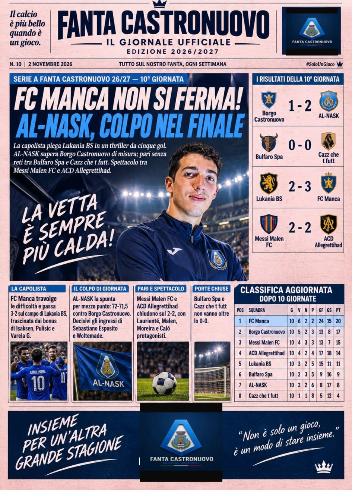

LEGA
FANTA CASTRONUOVO 26/27
Benvenuti nel portale ufficiale della Lega Fanta Castronuovo. Notizie, aggiornamenti e comunicazioni della stagione fantacalcistica 2026/2027.
Fanta Castronuovo 2026/2027
La terza edizione di FANTA CASTRONUOVO è qui.
TERZA EDIZIONE
8 SQUADRE 2 COMPETIZIONI.
2022/2023: Horto Muso FC (All. [STEFANO])
Competizioni
Campionato principale e Torneo dei Rioni.
L'ultima giornata
Il racconto, le analisi e i momenti più importanti del nostro campionato.

Il punto sulla giornata
FANTA CASTRONUOVO 26/27 DECIMA GIORNATA – FC MANCA NON SI FERMA, AL-NASK FIRMA IL COLPO! La decima giornata del Fanta Castronuovo regala spettacolo, gol e verdetti importanti. A prendersi la scena è ancora FC Manca, che supera Lukania BS per 3-2 al termine di una sfida ricca di emozioni. La capolista si affida a un reparto offensivo straordinario, trascinato dai bonus di Isaksen, Pulisic e Varela G., consolidando così il proprio primato. Successo preziosissimo anche per AL-NASK, che supera Borgo Castronuovo per 2-1 in una gara decisa nei dettagli. Determinanti gli innesti dalla panchina, capaci di ribaltare l’inerzia dell’incontro e regalare tre punti fondamentali. Poche emozioni, invece, nella sfida tra Bulfaro Spa e Cazz che t futt, che si dividono la posta con uno 0-0 avaro di occasioni e bonus. Spettacolo e grande equilibrio tra Messi Malen FC e ACD Allegrettihad, protagoniste di un combattuto 2-2 caratterizzato da prestazioni individuali di alto livello. La classifica vede FC Manca ancora al comando, mentre alle sue spalle la lotta per le posizioni di vertice resta apertissima. Con il campionato che entra sempre più nel vivo, ogni punto può rivelarsi decisivo. La corsa allo scudetto continua: la capolista lancia un altro segnale, ma le inseguitrici non hanno alcuna intenzione di arrendersi!
Giornata: NONA GIORNATA
Visualizza il giornaleComunicazioni ufficiali
Tutti gli aggiornamenti e le decisioni dell'amministrazione.
Le comunicazioni della Federazione
Consulta gli avvisi, le decisioni e le comunicazioni ufficiali della Lega Fanta Castronuovo.